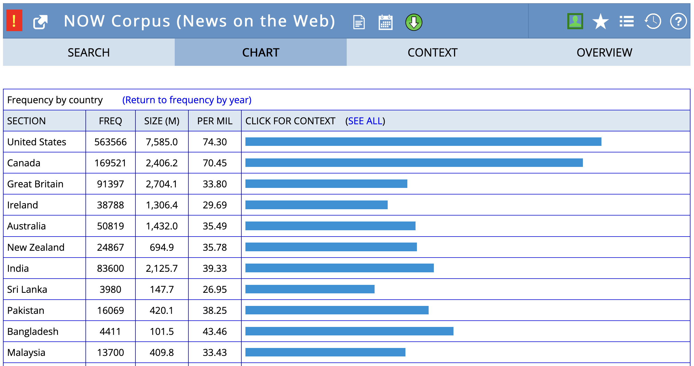
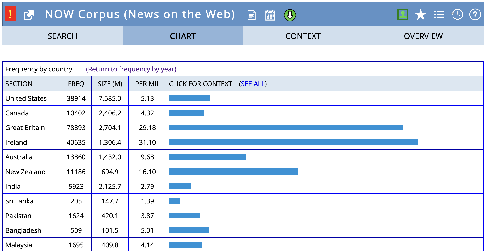
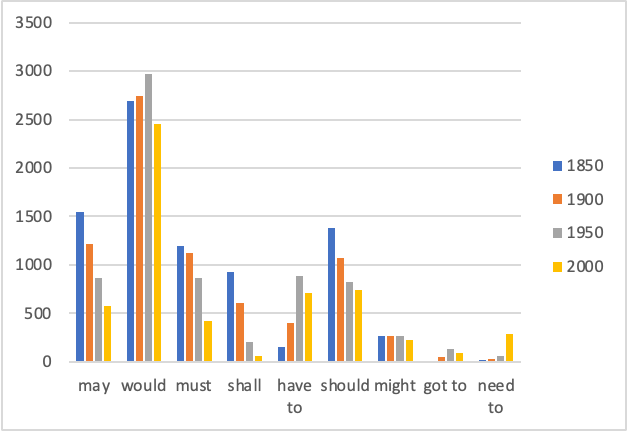

Linguistic Variation: How does language vary between speakers, text types, or geographical regions?
speaker variation: e.g., tag questions across age, gender, social class
text type/register variation: e.g., modal verb frequency in academic vs. fiction
geographical variation: e.g., fall vs. autumn
Language Change: How does language change over time?
lexical change: rise of neologisms such as hangry
semantic change: shift in collocates, cf. gay
grammatical change: diffusion of constructions along an S-curve (e.g. going to future)
Example: Geographical Variation
Frequency of fall vs. autumn by country in the NOW corpus.
fall

autumn

Example: Language Change

Theoretical Frameworks
Your research can be grounded in various theoretical frameworks:
Usage-based approaches: How do patterns of language use shape grammar and meaning?
S-Curve Model: How do linguistic innovations spread through a community?
Entrenchment-and-Conventionalization Model: How do novel expressions become fixed conventions?
Distributional Hypothesis: How can we understand the meaning of a word by looking at the contexts in which it appears?
Domains of Language
Lexis
The study of vocabulary, including its innovation and diffusion.
Neologisms are new words or expressions.
Can you think of recent examples?
staycation, glamping, hangry, cringe, social distancing, medfluencer
These can be investigated by looking at their frequency over time (e.g., in the English Trends corpus) or their distribution across text types (e.g., in enTenTen).
Morphology
The study of word formation and internal structure.
Clipping is a common word-formation process where a word is shortened.
For example, brother becomes bro, or refrigerator becomes fridge.
Research questions could explore:
Do source words and clipped forms differ in meaning?
How does their usage vary across text types or over time?
A corpus-based analysis could compare their frequency, collocations, and word sketches.
Syntax & Semantics
Syntax: The study of sentence structure.
An example topic is the study of a specific grammatical construction, like the the N BE that construction (e.g., “The problem is that…”).
Semantics: The study of meaning.
An example topic is semantic change, where you could investigate how the meaning of a word has evolved over time by analysing its changing collocates.
Data, Corpora & Methods
Corpora
Sketch Engine: Gutenberg English 2020, EEBO, enTenTen20, English Trends
english-corpora.org: COHA, COCA, NOW
Methods
Frequency
Collocations
Word Sketches
Further Reading
See Stefanowitsch (2020) for further examples and case studies.
Stefanowitsch, Anatol. 2020. Corpus linguistics: A guide to the methodology. Language Science Press.